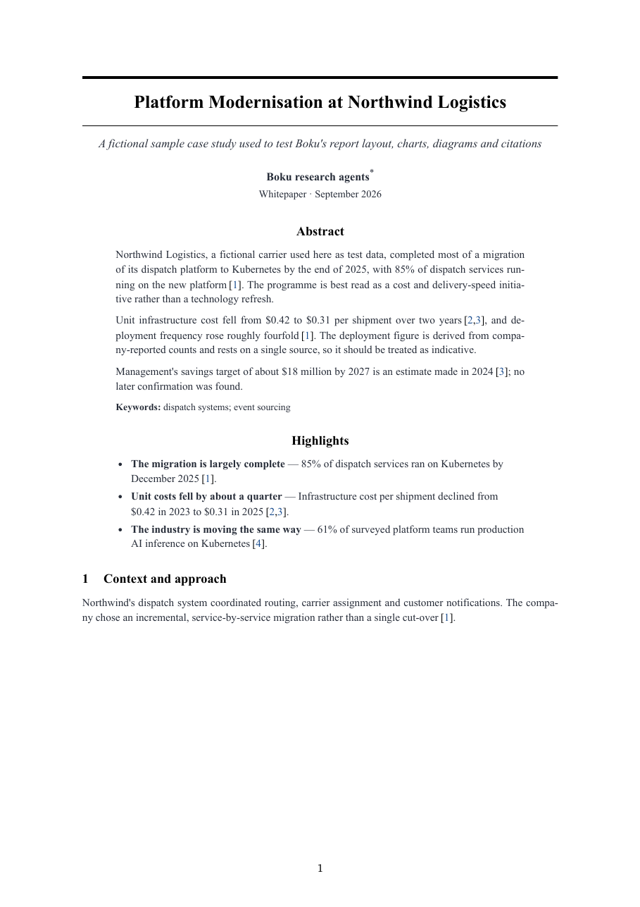

Boku documentation
Boku is an open-source multi-agent research engine written in Go. It plans a research programme, runs specialised agents in parallel, keeps every claim linked to its sources, has an independent critic check the evidence, and renders a professional report as PDF, HTML and Markdown.
Agents supply content and data; Boku's own code does everything else — de-duplicating sources, resolving citations, checking that chart values appear in the evidence, and typesetting. By default agents run on Claude Code. With a config file they run on any OpenAI-compatible endpoint or a local Ollama model.
Install
Requirements:
- Go 1.25 or newer (to build)
- Claude Code installed and logged in (
claudeon yourPATH) — the default runtime - Google Chrome, Chromium, Edge or Brave for PDF output
- Optional: Ollama with a small model for
--quickand local formatting
go install github.com/riteshsonawane1372/boku/cmd/boku@latest boku doctor
or from source:
git clone https://github.com/riteshsonawane1372/boku
cd boku
make build # ./bin/boku
boku doctor checks each piece:
✓ config ok ✓ claude code 2.1.285 (Claude Code) ✓ ollama llama3.1:8b at http://localhost:11434 (--quick and local formatting available) ✓ chrome /Applications/Google Chrome.app/Contents/MacOS/Google Chrome ✓ prompts ok
Quick start
# Full report (default) boku report "How enterprises are deploying AI agents in 2026" # A short search report: a cited brief of a few pages boku report "Is Postgres 18 async I/O worth enabling?" --short # Quick report on your local Ollama model: no Claude Code tokens boku report "Main approaches to GPU sharing on Kubernetes" --quick # Put the numbered source list inside the PDF too boku report "…" --save-ref # Your own model instead of Claude Code boku report "…" --config config.yaml
Every run writes a directory under runs/; published files go to reports/. Interrupted runs continue with boku resume <run-dir>.
Report modes
You never need a flag for the default. Pick another mode per report:
| Mode | Flag | What it does |
|---|---|---|
| Full | none (or --mode full) | Planner, up to 6 research workstreams, fact-check with follow-up research rounds, synthesis, editorial revision. Full layout: cover, contents, sections, methodology. |
| Short | --short (--mode short) | Quick depth, at most 3 workstreams, one fact-check round without follow-ups, and a brief of 2–4 sections in the compact layout (title block, no cover or contents). |
| Quick | --quick (--mode quick) | Every role on the local Ollama model; Boku does the web search itself; fact-checking is skipped; compact layout. Spends no Claude Code tokens. |
| Whitepaper | boku whitepaper, --whitepaper (--mode whitepaper) | The most detailed format: a research paper with abstract, keywords, numbered sections and subsections, captioned figures and tables, [n] citations and a reference list. Deep research; references always included; paper layout. See whitepapers. |
| Explainer | boku explain, --explainer (--mode explainer) | A visual explainer instead of a report: big picture, key ideas, architecture and process diagrams, step-by-step flows, glossary. Up to 4 workstreams, one follow-up round. Given a directory, explains that codebase. See explainers. |
Modes set defaults; explicit flags still win. --short --agents 4 keeps four workstreams, --quick --local-model qwen2.5:14b uses a bigger local model.
Quick reports are a first pass. A small local model reads fewer pages and nothing checks its claims. Boku still refuses sources it did not fetch and drops citations to unknown findings, and the methodology appendix says the report was not fact-checked. Use --short or the default when accuracy matters.
Whitepapers
boku whitepaper writes the subject up the way a conference paper or arXiv preprint would: a title block, an Abstract with keywords, optional Highlights, then numbered sections — Introduction (ending with the paper's contributions and organisation), Background, Related Work, the core technical sections, Empirical Evidence, Discussion, Open Problems and Future Directions, Conclusion — followed by References and lettered appendices (methodology, evidence register).
boku whitepaper "Sparse attention for long-context transformers" boku report "Disaggregated prefill and decode for LLM serving" --whitepaper boku whitepaper "…" --depth standard --max-cost 25 # cheaper; flags still win
- Layout (
report.layout: paper): single column, serif, centred title between rules, justified text, sections and subsections numbered 1, 1.1, …, table captions above and figure captions below (Table 2:, Figure 1:), citations as[3], a numbered reference list. No cover, contents page or running header. - Research: deep depth, researchers go to the original papers, specifications and documentation, record authors and venue, and keep every reported result with its conditions (dataset or workload, metric, hardware, configuration). The fact checker checks attribution first.
- Honesty: Boku runs no experiments. The paper surveys and argues from the cited work, never presents a sourced result as its own, and says so in a footnote on the first page.
- Equations are written inline in plain text with Unicode (softmax(QKᵀ / √dₖ)); there is no LaTeX typesetting.

Explainers
boku explain runs the same pipeline — plan, research, fact-check, synthesis, editing — but the goal is understanding, not a verdict. The editor writes for a smart newcomer: The big picture first, then Key ideas, an architecture diagram of the whole, a section per main flow with a process diagram and numbered steps, a glossary, and Where to go next.
boku explain "How does Raft consensus work?" boku explain ./path/to/repo # explain a codebase boku explain ./path/to/repo "how a request is authenticated" # …with a focus boku report "How TLS 1.3 works" --explainer # same as boku explain
Codebases. When the first argument is a directory, the subject is that repository (research.codebase). The planner receives its file tree, README and current commit. The planner, researchers and fact checker get the read-only Read, Glob and Grep tools and run inside the repository; they still have no shell and cannot write. Sources are files, cited by repository-relative path and line range (internal/agent/claude.go#L48-L75), and the explainer adds a Where things live table mapping concepts to directories and files. The editor never sees the repository, only the checked findings.
Codebase explainers need the Claude Code provider, because other providers have no file tools, and cannot run with --quick. Agents can read any file in the directory you give them, so don't point Boku at a directory holding secrets you wouldn't send to the model provider.
References file
Citations in the report are numbers: … grew 34% in 2025.3. The sources behind those numbers are always written next to the report as compact JSON, one entry per line:
reports/ kubernetes-platform-ai-infrastructure.pdf kubernetes-platform-ai-infrastructure.references.json
{"title":"Kubernetes as the Platform for AI Infrastructure","topic":"…","run_id":"…","date":"2026-09-23",
"references":[
{"n":1,"title":"…","publisher":"CNCF","url":"https://…","published":"2026-01-20","accessed":"2026-09-23","tier":1},
…
],
"evidence":[
{"id":"F052","claim":"Gartner forecasts …","status":"Estimated","as_of":"2026","refs":[5]},
…
]}
n is the citation number in the text; evidence lists every cited finding with its status and the references that support it. The PDF, HTML and Markdown leave the source list and evidence register out and say which file holds them — keeping the document short and making the references cheap to hand to another model.
To print them in the document as well, pass --save-ref (or set report.include_references: true). It works on re-renders too, at no cost:
boku render runs/2026-09-23T024958-kubernetes-used-ai-infrastructure --save-ref
Report shape follows the request
Reports are not poured into one template. The planner writes a report_shape from your wording, and the synthesizer and editor receive your original request with an instruction to honour its format, length, audience and structure:
- "Compare X and Y" opens with the comparison table and ends with a Verdict.
- "Should we…" leads with the Recommendation, then options, risks and next steps.
- "Give me a one-pager" gets the compact layout and a short summary.
- "Step by step" orders sections as steps.
The editor may rename the fixed parts (summary_title, key_findings_title, conclusion_title), leave out key findings or the conclusion when the form does not need them, and choose layout: compact. Set report.layout: full or compact to override its choice.
Web interface
boku ui runs the same pipeline behind a local web app. It is embedded in the binary: no extra install and no build step.
boku ui # serves http://127.0.0.1:7878 and opens the browser boku ui --port 9000 --no-open boku ui --config team.yaml # read and save this file instead of ./boku.yaml

| Page | What it does |
|---|---|
| New report | A topic, or a local codebase and focus for explainers; the five modes; every setting in boku.yaml as a form. A side panel shows what the run will do, validates as you type, lists the settings you changed, saves presets, and prints the equivalent boku command. |
| Runs | Every run in the runs directory. A run page shows live stages, cost by stage, quality gates, agent calls and the log, with tabs for the report, plan, evidence, fact-check rounds, files and settings. Cancel, resume, re-render, duplicate or delete from there. |
| Reports | Published PDFs, HTML, Markdown and reference files, each linked to its run. |
| Settings | Edit the defaults and save them to boku.yaml; the boku doctor checks. |
Runs are ordinary run directories: runs started from the CLI appear in the UI, live, and boku resume continues runs started in the UI.
Stopping boku ui cancels the runs it is executing; resume them afterwards. Saving settings rewrites boku.yaml, so comments in an existing file are lost.
| Flag | Meaning |
|---|---|
--port N | port to listen on (default 7878) |
--host ADDR | address to listen on (default 127.0.0.1). Anything but loopback requires the access token printed in the URL at start |
--config FILE | configuration file to read and save |
--no-open | do not open the browser |
The server listens on loopback only and rejects requests from other websites. Exposed with --host, it speaks plain HTTP behind a token: anyone with the URL can start agents and read run files, so keep it to networks you trust.
Commands and flags
boku report <topic> [flags] research a topic and publish a report
boku explain <topic|dir> [focus] [flags]
visual explainer of a topic, or of a local codebase
boku whitepaper <topic> [flags] detailed paper in academic/industry format
boku resume <run-dir> [flags] continue an interrupted or blocked run
boku render <run-dir> [flags] rebuild outputs from a run's artifacts (no agents, no cost)
boku status <run-dir> stages, tasks and cost of a run
boku ui [flags] open the web interface
boku doctor check the agent runtime, Ollama and Chrome
boku init [path] write a commented boku.yaml
| Flag | Meaning |
|---|---|
--short, --quick, --explainer, --whitepaper, --mode M | report mode (see modes) |
--save-ref | include the source list and evidence register in the document |
--local-model TAG | Ollama model for --quick and formatting |
--depth quick|standard|deep | how much research to do |
--agents N | maximum research workstreams |
--parallel N | maximum agents running at once |
--max-cost USD | stop launching agents at this spend |
--freshness 30d|6m|1y | window within which information counts as current |
--sources "…" | preferred sources or source types |
--min-sources N | distinct sources the research gate expects |
--format pdf,html,md | outputs to publish |
--model M | model for all agents on the main provider |
--iterations N | fact-check → follow-up research rounds |
--config FILE | configuration file (default ./boku.yaml if present) |
Exit codes: 0 published, 1 error, 3 blocked by a quality gate, 130 interrupted.
Run directory
runs/2026-09-23T074500-enterprises-deploying-ai-agents-2026/ manifest.json configuration, stage status, every agent call, cost plan.json / .md planner output research/ one JSON artifact per research task evidence/ de-duplicated sources and findings (F001 ⇄ S001) factcheck/ one artifact per critic round synthesis/ thesis, insights, outline report/ document.json (drafts), report.json, references.json, gates.json, HTML, Markdown output/ the PDF before publishing agents/ raw agent responses logs/boku.log
Custom models
Claude Code is the default and needs no configuration. To run Boku on another model, pass a config file. Nothing changes unless you do.
# config.yaml agents: provider: openai # claude-code | ollama | openai endpoint: http://localhost:8000/v1 model: Qwen/Qwen2.5-72B-Instruct api_key_env: OPENROUTER_API_KEY # name of the env var; empty for a local server price_input_per_mtok: 0.35 # optional, for cost tracking and --max-cost price_output_per_mtok: 0.40 timeout: 30m
boku report "How are banks deploying generative AI?" --config config.yaml
| Provider | Speaks | Examples |
|---|---|---|
claude-code | claude -p in restricted mode | default; agents.model: opus, role_models |
openai | POST {endpoint}/chat/completions | vLLM, SGLang, LM Studio, llama.cpp server, OpenRouter, OpenAI, Together, Groq |
ollama | POST {endpoint}/api/chat | any pulled Ollama model |
Structured output: Boku sends the JSON Schema for each agent's output as response_format: json_schema (OpenAI-compatible) or format (Ollama), and also in the system prompt. Servers that reject response_format are retried without it.
Mix providers per role with local.roles: for example keep research on Claude Code and run synthesis and formatting locally with local.roles: [synthesizer, formatter]. See examples/custom-model.yaml and examples/local-ollama.yaml.
Local model (Ollama)
ollama pull llama3.1:8b # or qwen2.5:7b, qwen2.5:14b, gemma2:9b …
boku doctor
The local model does two jobs:
- Formatting pass (always, when Ollama is reachable). If the editorial draft passes every check but has style problems — generic phrasing, stray Markdown, repeated sentences — Boku sends just those passages to the local model instead of asking the main model for a full revision. A rewrite is accepted only if it keeps exactly the same citation markers and numbers, so it cannot change facts. Turn it off with
local.format: false. - Quick mode.
--quickroutes every role to the local model.
local: endpoint: http://localhost:11434 model: llama3.1:8b context_tokens: 16384 # num_ctx; Ollama's default of 2048 is too small format: true roles: [] # e.g. [formatter, synthesizer]; --quick uses all
Boku fits fetched pages to context_tokens (Ollama silently drops the start of an over-long prompt) and caps each generation, so a small model cannot run away. Larger models (14B+) with 32k context write noticeably better quick reports.
Web search for models without web tools
Claude Code searches and reads the web by itself. Ollama and OpenAI-compatible models cannot, so Boku does it for them before each research task:
- Search each workstream question (DuckDuckGo by default, or your SearXNG instance).
- Fetch the top result pages, round-robin across questions, and extract readable text, title, publisher and publication date.
- Give the pages to the model as numbered sources
s1…sN. - Re-ground the output: a cited source must be a page Boku fetched; its URL, title and date come from the fetch, not the model. Findings citing anything else are rejected as unsourced.
search: engine: duckduckgo # duckduckgo | searxng searxng_url: "" # e.g. http://localhost:8888 (JSON output enabled) results_per_query: 5 max_pages: 10 # per research task page_chars: 4000 # text kept per page
Page fetches refuse loopback, private and link-local addresses: result URLs are untrusted, so a fetch can never reach services on your machine or network.
Configuration
boku init writes a commented boku.yaml. Boku reads ./boku.yaml automatically, or the file given with --config. Flags override the file; unknown keys are errors.
agents: provider: claude-code model: "" # Claude Code default role_models: {editorial: opus} max_parallel: 4 max_agents: 6 max_retries: 2 timeout: 20m max_cost_usd: 0 # 0 = unlimited local: {endpoint: http://localhost:11434, model: llama3.1:8b, context_tokens: 16384, format: true} search: {engine: duckduckgo, results_per_query: 5, max_pages: 10, page_chars: 4000} research: depth: standard # quick | standard | deep freshness_days: 365 max_iterations: 2 min_sources: 0 # 0 = from depth: 8 / 20 / 35 fact_check: true codebase: "" # set by boku explain <dir> report: mode: full # full | short | quick | explainer | whitepaper layout: auto # auto | full | compact | paper include_references: false # --save-ref formats: [pdf] page_size: A4 author: "" output: directory: ./reports runs_directory: ./runs prompts_directory: ""
Pipeline and agents
topic ─▶ Planner ─▶ plan.json (objective, questions, workstreams, report shape)
├─▶ Primary ─┐
├─▶ Market ──┤ parallel research agents
├─▶ Technical┤
└─▶ … ─┘
▼
Evidence store (F001… ⇄ S001…, de-duplicated, tiered, dated)
▼
Fact checker ⟲ follow-up research ── research & fact gates
▼
Synthesis (thesis, insights, outline)
▼
Editorial ⟲ local formatter ⟲ revision ── editorial gate
▼
Report model ─▶ HTML ─▶ PDF ── PDF gate
└▶ references.json
| Role | Job | Tools |
|---|---|---|
| planner | objective, questions, workstreams, report shape | web search |
| primary · market · technical · financial · competitive · case-study | research one workstream into sourced findings | web search, fetch |
| fact-checker | verifies claims, rejects unsupported ones, requests follow-ups | web search, fetch |
| synthesizer | selects, connects and interprets; designs the outline | none |
| editorial | writes the report as structured content with citations | none |
| formatter | fixes style problems in flagged passages (local model) | none |
Claude Code agents run as claude -p in restricted mode with only web tools (plus read-only file tools for codebase explainers), no MCP servers, a filtered environment and a JSON Schema for their output. The Go process orchestrates; agents never write files or run commands.
Source breadth
Researchers are told to go wide before going deep: search each question several ways, mix source types (primary documents, independent research, quality press, practitioner write-ups), follow citations upstream to the original, corroborate headline numbers with two independent sources, and look specifically for the last 90 days. Targets by depth:
| Depth | Findings per researcher | Sources per researcher | Research gate target |
|---|---|---|---|
| quick | 6–10 | 6+ | 8 sources |
| standard | 12–20 | 10+, three types | 20 sources |
| deep | 20–35 | 18+, four types | 35 sources |
The planner names 4–8 specific priority sources per workstream. Raise the bar with --min-sources.
Quality gates
- Research gate: enough usable findings and distinct sources; warns on weak tiers and undated data.
- Fact-check gate: blocks only if the fact check did not run (skipped in quick mode). A failed verdict or unresolved critical issues are warnings: the report is published with those points in a red Not verified box after the executive summary and in the methodology appendix, and the editor may not state them as fact.
- Editorial gate: unknown or rejected citations, uncited summary, citation coverage, generic phrasing, repetition.
- PDF gate: pages rendered, no empty pages, every section present, citations rendered.
A blocked report exits with code 3; the reason is in report/gates.json and nothing is published.
Cost
Costs reported by Claude Code for real runs, recorded in each run's manifest.json:
| Run | Depth | Agent calls | Findings / sources | Cost |
|---|---|---|---|---|
| Kubernetes for AI infrastructure | quick | 11 | 72 / 77 | $7.73 |
| GPU monitoring tool roadmap | standard | 13 | 120 / 147 | $12.96 |
| Self-hosting vs managed AI | deep | 10 | 197 / 217 | $24.09 |
| Launching an agentic AI start-up | deep | 10 | 178 / 207 | $30.72 |
Research agents account for 70–85% of spend. To spend less: --short, --agents 3, --iterations 0, a cheaper model for researchers via role_models, a hard cap with --max-cost, or --quick for zero API spend.
Tuning
- Prompts are Markdown in
prompts/, embedded in the binary. Copy them and setoutput.prompts_directoryto experiment without rebuilding. - Look and feel:
internal/render/style.cssandreport.html.tmpl; thenboku render <run-dir>. - Models per role:
agents.role_models: {fact-checker: opus, editorial: opus}.
Troubleshooting
| Symptom | Fix |
|---|---|
quick mode needs the local model | Start Ollama and ollama pull llama3.1:8b, or pass --local-model with a model you have. |
duckduckgo returned HTTP 202 / no results | You are being rate-limited; lower agents.max_parallel or use search.engine: searxng. |
| Exit code 3 | A gate blocked publication; read report/gates.json. Resume after raising limits, or re-render. |
| No PDF | Install Chrome/Chromium or set report.chrome; or --format html,md. |